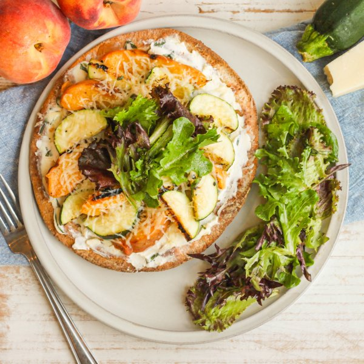

Grilled Peach-Zucchini Flatbread with Cream Cheese & Balsamic Greens

Nutrition (per serving)
660.5 kcalCalories
23.3 gProtein
62.1 gCarbs
38.5 gFat
Full nutrition table
| Calories | 660.5 kcal |
| Total fat | 38.5 g |
| Saturated fat | 17.8 g |
| Trans fat | 0.9 g |
| Cholesterol | 76.6 mg |
| Sodium | 483.4 mg |
| Carbohydrates | 62.1 g |
| Fiber | 8.9 g |
| Sugars | 22 g |
| Protein | 23.3 g |
| Potassium | 882.6 mg |
| Calcium | 123.3 mg |
| Iron | 3.8 mg |
| Vitamin A | 1541.8 IU |
| Vitamin C | 32.3 mg |
| Vitamin D | 5.4 IU |
Cookware
Ingredients
- 1 (8 oz) blockcream cheese
- 1 small pkgfresh basil
- 4 ozParmesan cheese
- 4peaches
- 1 (5 oz) pkgspring mix (mixed greens)
- 4whole grain pitas
- 2 mediumzucchini squash
- balsamic vinegar
- black pepper
- extra virgin olive oil
- honey
- salt
Steps
- Preheat oven to 450°F.
- Wash and dry the fresh produce.2 medium zucchini squash
4 peaches
1 small pkg fresh basil
1 (5 oz) pkg spring mix (mixed greens) - Preheat a grill pan, outdoor grill, or regular skillet over medium-high heat.
- Trim and halve zucchini lengthwise. Season the cut-sides with salt and pepper.¼ tsp salt
¼ tsp black pepper - Once the pan is hot, coat with oil. Add zucchini to the pan and grill, flipping once, until charred and just tender, about 10 minutes. Remove to a plate. (Reserve pan for later use.)2 tsp extra virgin olive oil
- Meanwhile, arrange pitas on a large baking sheet pan. Place in the oven (it doesn't have to be fully heated) and bake, flipping halfway through, until pitas are slightly crispy, about 5 minutes. Remove from oven and set aside.4 whole grain pitas
- While the pitas are baking, finely grate Parmesan and set aside.4 oz Parmesan cheese
- Quarter peaches lengthwise (around the pit); twist halves to separate, then remove and discard pits. Season the cut-sides with salt and pepper.¼ tsp salt
¼ tsp black pepper - When the zucchini is done, return the pan to medium-high heat and coat with more oil. Add the peaches and grill, flipping once, until charred and warmed through, about 3 minutes. Remove to the plate with the zucchini.2 tsp extra virgin olive oil
- Meanwhile, pick basil leaves off the stems, roll up crosswise, and thinly slice into ribbons. Divide between one small bowl and one medium bowl. (Set medium bowl aside for the salad.)
- Add cream cheese, salt, and pepper to the small bowl with the basil. Using the back of a spoon, mash and combine the cream cheese, then spread evenly over each toasted pita.1 (8 oz) block cream cheese
⅛ tsp salt
⅛ tsp black pepper - Cut grilled zucchini crosswise into ¼-inch thick half-moons. Slice grilled peaches lengthwise into ½-inch thick wedges. Divide zucchini and peaches between pitas, arranging in an even layer, then top with Parmesan.
- Return baking sheet to the oven and bake until flatbreads are warmed through and cheese is melted, about 3 minutes. Remove from oven.
- Meanwhile, add oil, vinegar, honey, salt, and pepper to the medium bowl with the basil. Whisk to combine the dressing.4 tsp extra virgin olive oil
4 tsp balsamic vinegar
2 tsp honey
¼ tsp salt
¼ tsp black pepper - Add mixed greens to the bowl with the dressing and toss to coat.
- Divide flatbreads between plates and top each with a small handful of greens. Serve with remaining greens on the side and enjoy!